DMD GIF Creator
Transformez images, logos, vidéos et textes en GIF taillés pour un écran DMD 128×32 — borne d'arcade, flipper, RecalBox DMD. L'application juge elle-même ce qui reste lisible, choisit le bon rendu, et traite des dossiers entiers.
Windows · exécutable autonome, rien à installer · gratuit
{kind=link}
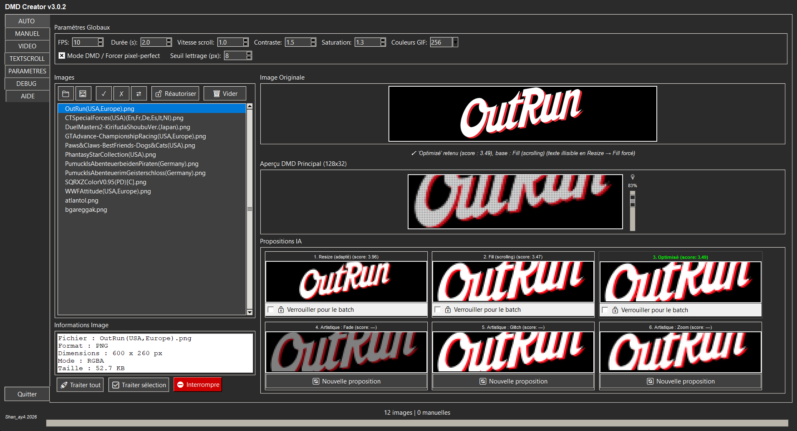
Un logo, six propositions
Pour chaque image, l'application calcule deux rendus 128×32 — Resize (l'image entière, réduite) et Fill (l'image plus grande, qui défile) — et leur donne un score d'occupation de l'écran et de lisibilité. Le meilleur est retenu puis affiné en Optimisé ; trois variantes artistiques complètent le choix. Voici exactement ce qu'elle propose pour ce logo :
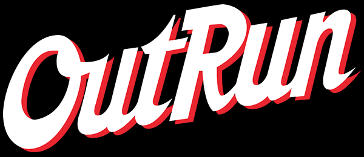
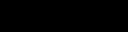
Lisibilité d'abord. Ici, Resize obtient le meilleur score (3.96 contre 3.47), mais réduit à 32 pixels de haut, le lettrage deviendrait illisible sur le panneau. L'application le détecte et impose Fill : le logo reste grand et défile. C'est la mesure de la hauteur des lettres après réduction qui décide, pas seulement le score.
Un dossier entier, chaque logo traité à sa façon
Donnez-lui un dossier complet — par exemple tous les logos scrapés d'une ludothèque. Chaque image passe par la même analyse que ci-dessus et reçoit son propre mode de rendu : réduit quand il reste lisible, défilant quand le texte l'exige. Les images sont traitées en parallèle, l'arborescence est conservée en sortie, les fichiers source ne sont jamais modifiés, et une proposition peut être verrouillée pour tout le lot.

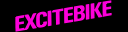
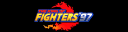
Six logos d'un même lot : le mode a été choisi pour chacun, sans intervention
Voir le panneau avant d'exporter
Chaque aperçu reproduit le vrai rendu d'un panneau LED : points ronds, espace sombre entre eux, léger halo. Un clic ouvre la loupe, une fenêtre agrandie ×8 animée en direct, et un curseur simule la luminosité du panneau.
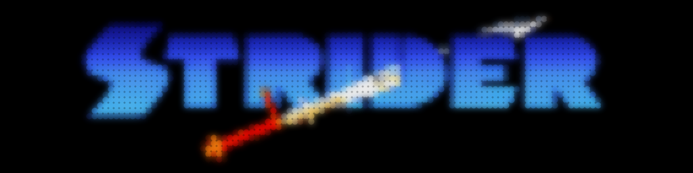
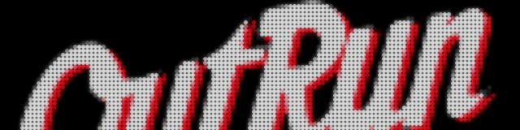
Des pixels nets, pas de la bouillie
Un écran DMD n'a que 4 096 points : chaque pixel compte. Le mode Pixel-perfect impose un facteur d'échelle entier au lieu d'un redimensionnement fractionnaire, pour que chaque pixel de l'image tombe exactement sur une LED. Sur un logo en pixel-art, la différence est immédiate :
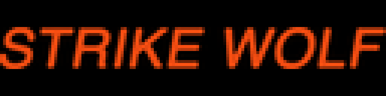
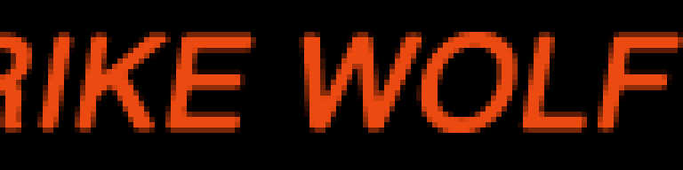
La main sur chaque pixel
Recadrage 128×32, luminosité, contraste, netteté, filtres, pot de peinture et gomme magique, animations avec easing et boucle, multi-images et morphing — avec annuler/rétablir à chaque étape.
{kind=link}
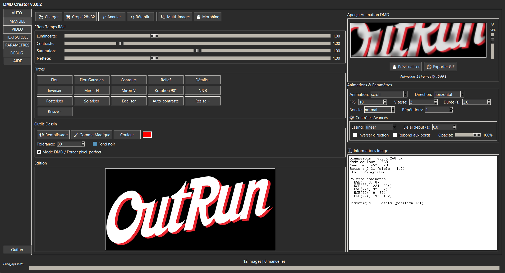
Un passage de vidéo, en GIF DMD
Choisissez le passage sur la frise, puis le cadrage : suivi automatique d'un sujet, cadrage auto avec zoom, ou points manuels qui déplacent la zone au fil du temps. La qualité automatique ajuste les couleurs d'après la vidéo et le poids du GIF s'affiche en direct.
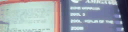
{kind=link}
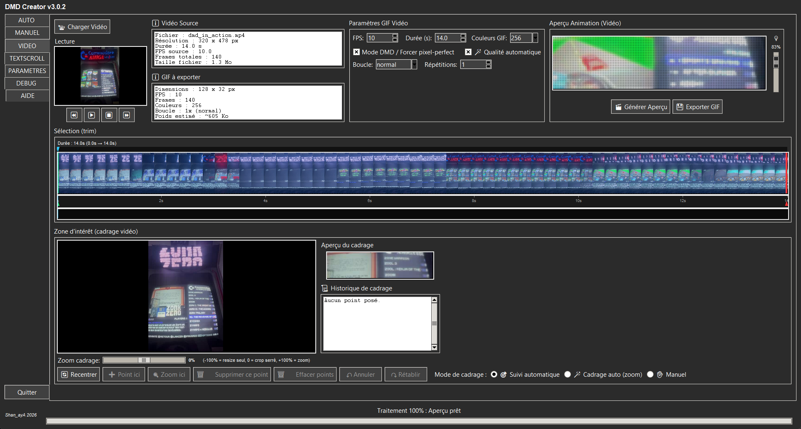
Du texte qui bouge
Tapez un message, choisissez police, couleurs et effet — arc-en-ciel, néon, feu, métal… — puis l'animation : défilement, vague, Star Wars, machine à écrire, pluie Matrix, glitch. La durée s'ajuste toute seule à la longueur du texte.
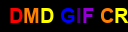
{kind=link}
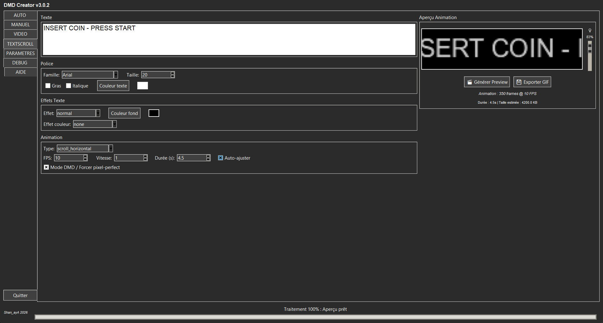
Le compagnon du panneau RecalBox DMD
Les GIF sortent au format attendu par le panneau RecalBox DMD : 128×32, palette réduite, poids maîtrisé. Glissez-les ensuite dans sa playlist ou sur sa carte SD.